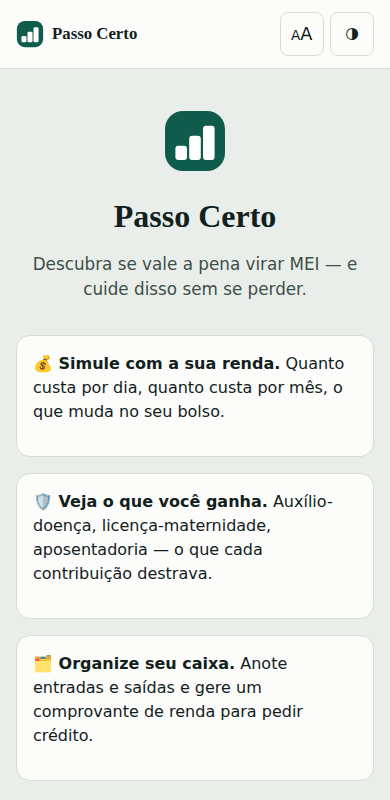
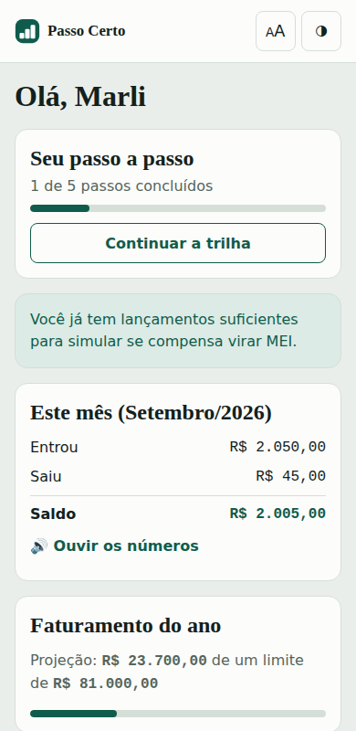
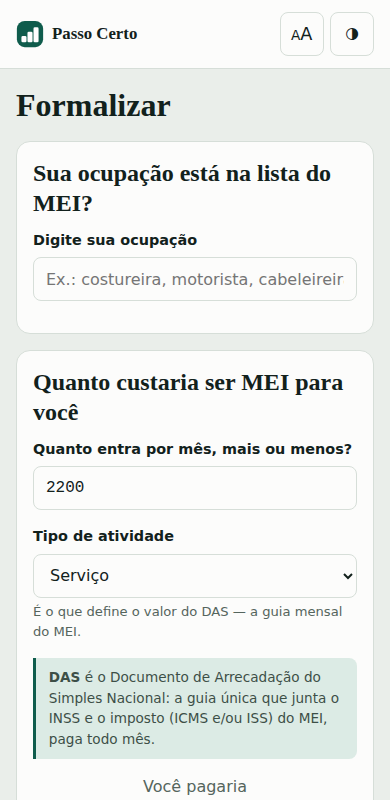
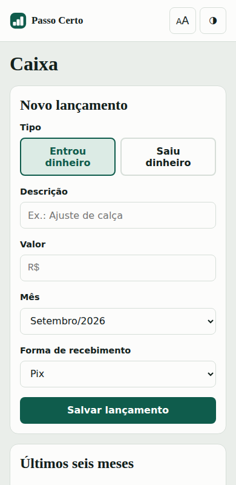
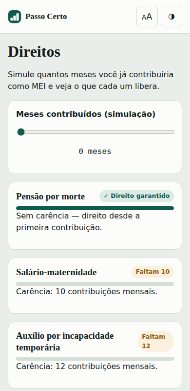
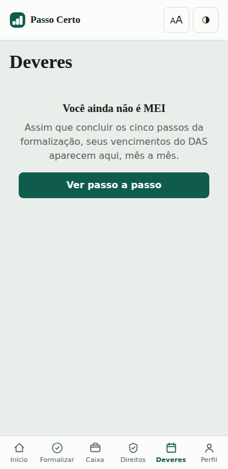
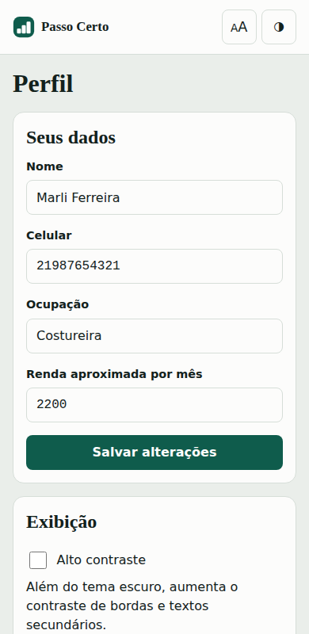

Decida se vale a pena virar MEI, dê esse passo e mantenha o registro em dia.
Dossiê do projeto acadêmico · Engenharia de Software · ODS 8 (ONU)
O problema, com dados
No Brasil, 37,5% da população ocupada está na informalidade — cerca de
38,5 milhões de pessoas (PNAD Contínua/IBGE, trimestre nov.2025–jan.2026).
Ser informal significa conviver com três privações ao mesmo tempo:
Sem cobertura do INSS — adoeceu, a renda para.
Sem nota fiscal — o teto de clientes é a vizinhança.
Sem histórico de renda — crédito negado ou a juros de pessoa física.
O MEI resolve as três por R$ 86,05 por mês —
R$ 2,83 por dia, ou 3,6% do faturamento
de quem recebe R$ 2.400 mensais.
A tese do projeto: a informalidade persiste por assimetria de informação, não por custo.
Objetivo geral
Ajudar trabalhadores informais brasileiros a decidir, de forma informada e com a própria renda como
referência, se e quando se formalizar como MEI — apoiando também o registro e a manutenção da regularidade
depois disso.
Objetivos específicos
Simular o custo real da formalização a partir da renda da pessoa.
Traduzir a contrapartida previdenciária em benefícios concretos, com carência explícita.
Unificar caixa, comprovação de renda e obrigações num só lugar.
Reduzir a barreira digital de entrada — sem conta gov.br, sem senha, sem jargão.
Orientar o passo a passo até o Portal do Empreendedor oficial, sem se sobrepor a ele.
Alertar preventivamente sobre teto de faturamento e prazos, antes que virem problema.
Comparação com as ferramentas existentes
O governo já oferece o Meu MEI Digital (gov.br / Portal do Empreendedor), que reúne os
módulos "Quero ser MEI" e "Já sou MEI": abre CNPJ, emite DAS, faz a declaração anual, registra faturamento
bruto e emite o CCMEI. Existe também o Meu INSS, para consultar contribuições e pedir
benefícios.
O enquadramento que se sustenta: as ferramentas existentes resolvem o
ato de se formalizar — registrar, emitir, declarar. Nenhuma resolve a decisão de se
formalizar.
Quatro lacunas concretas, que são a razão de existir do Passo Certo:
Ninguém simula com a renda da pessoa. Nenhuma ferramenta pergunta quanto você ganha
para dizer se compensa, quanto custa por dia e que fatia da renda isso representa.
Ninguém mostra a contrapartida. Benefício a benefício, com carência e progresso, não
existe em lugar nenhum — o Meu INSS mostra contribuições, não "faltam 4 para você ter direito a
auxílio-doença".
Tudo está fragmentado. Faturamento em um app, contribuições em outro, comprovação de
renda para crédito em lugar nenhum.
A porta de entrada exige conta gov.br verificada — exatamente a barreira digital do
público-alvo.
Posicionamento: complementaridade, não concorrência. O Passo Certo é a camada anterior ao
governo — convence, calcula e prepara, e entrega a pessoa no Portal do Empreendedor sabendo o que está
fazendo. Se a formalização acontece no app oficial, o projeto cumpriu o objetivo.
Cinco diferenciais
Simulação com a renda real de quem usa, não uma tabela genérica.
Contrapartida previdenciária traduzida em direitos concretos, com carência e progresso.
Caixa, comprovação de renda e obrigações reunidos em um só lugar.
Entrada sem barreira digital: sem gov.br, sem senha, sem jargão na primeira tela.
Complementar ao governo — entrega a pessoa pronta ao Portal do Empreendedor, em vez de competir com ele.
Vantagens
Para o trabalhador
Renda protegida por INSS em caso de doença, maternidade ou morte.
Mais clientes: 82% dos MEIs da indústria dizem que o CNPJ aumentou as vendas (Sebrae).
Acesso a crédito com histórico de renda formal — hoje, apenas 12% dos pequenos negócios
informais conseguem crédito.
Para o país
Redução da informalidade e ampliação da arrecadação previdenciária.
11,5 milhões de MEIs ativos hoje, 90% em operação (Sebrae, Perfil do MEI) — a base já é grande;
falta alcançar quem ainda está de fora.
Fortalecimento de pequenos negócios e inclusão financeira.
Metas da ODS 8 endereçadas
Meta
Descrição
8.3
Promover políticas voltadas para emprego produtivo, empreendedorismo e formalização de micro e pequenas empresas.
8.5
Emprego pleno e produtivo e trabalho decente para todos.
8.8
Proteger os direitos trabalhistas e promover ambientes de trabalho seguros.
8.10
Fortalecer a capacidade das instituições financeiras nacionais para expandir o acesso a serviços bancários, de seguro e financeiros.
As telas do app
Capturas da demonstração com a persona Marli Ferreira (dados fictícios).

Entrada

Início

Formalizar

Caixa

Direitos

Deveres

Perfil
O que tem dentro do app
Login sem senha em 3 passos, com reconhecimento de quem já usou o app antes.
Início: trilha de formalização, saldo do mês, medidor do teto anual e alertas.
Formalizar: busca de ocupação com CNAE, diagnóstico com a renda real, tabela comparativa e trilha de 5 passos até o Portal do Empreendedor.
Caixa: lançamentos, gráfico de 6 meses, calculadora de "quanto cobrar", recibo compartilhável e comprovante de renda imprimível.
Direitos: os seis benefícios com carência e um simulador de meses contribuídos.
Deveres: grade de 12 meses do DAS, multas por atraso, lembrete da DASN-SIMEI e regra do desenquadramento.
Perfil: dados editáveis, exportar/importar em JSON, apagar tudo, alto contraste, restaurar demonstração.
Microlições de uma linha (DAS, CNAE, CNPJ, DASN-SIMEI) no contexto onde a dúvida nasce.
Leitura em voz alta dos números principais (Web Speech API).
PWA instalável, funciona offline.
A marca
Três degraus subindo: cada um é um passo, o
conjunto é crescimento — a segunda metade da ODS 8. A semelhança com um gráfico de barras é intencional:
são os meses de faturamento que o app registra.
Sobre o trabalho
Carregando dados da equipe salvos no app…
Preencha a disciplina, professor(a), instituição, curso e integrantes na tela
Perfil → Sobre o app, dentro do próprio Passo Certo — eles aparecem aqui automaticamente.
Limitações
O app não emite guia nem abre CNPJ — depende de integração com sistemas federais.
A lista de ocupações elegíveis ao MEI é uma amostra representativa, não a base oficial completa.
Os parâmetros fiscais mudam anualmente; o PLP 60/2025 e o PLP 67/2025 propõem elevar o teto do MEI
para R$ 140 mil ou R$ 150 mil.
Não houve teste de usabilidade com o público-alvo real — é o próximo passo, indispensável antes de
qualquer lançamento.
Fontes
PNAD Contínua (IBGE) · Perfil do MEI (Sebrae) · metas nacionais da ODS 8 (Ipea) ·
Lei Complementar nº 123/2006 · Lei Complementar nº 128/2008 · Lei nº 13.709/2018 (LGPD) ·
Portal do Empreendedor e Meu MEI Digital (gov.br) · tabela DAS-MEI 2026 · reajuste do salário mínimo 2026.
Aviso de protótipo
Este é um protótipo acadêmico. Os dados de demonstração (persona Marli Ferreira) são
fictícios, o código de verificação do login é sempre 1234, e nenhuma informação sai do
aparelho de quem usa o app.